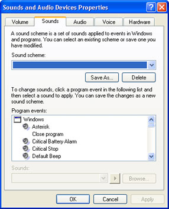
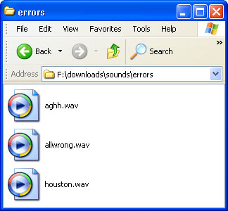
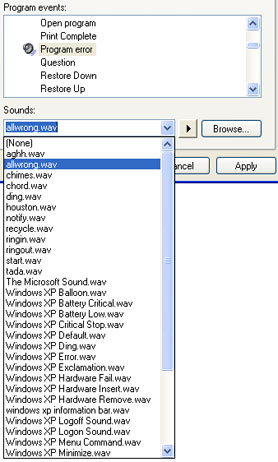
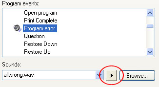

Free
computer Tutorials
|
Free
computer Tutorials
|
|
 home home |
Stay at Home and Learn | ||||
Change the Sounds that Window XP makes
This tutorial assumes that you have set the Control panel to Classic View. To see how to do this, click this link (opens in a new window): Set the Control Panel to Classic View
You can change the sounds that Window XP makes when it's doing something (displaying an error message, starting up, emptying the recycle bin, etc). If you're getting tired of that short musical burst when XP closes down, then why not replace it with something of your own? Here's how.
Click the Start button in the bottom left of your screen. From the Start menu, select Control Panel. From the Control Panel, double click Sounds and Audio Devices. The first Tab will be the Volume controls for your computer. Click the Sounds tab at the top to see the following screen:  The first drop down box is for any Sound schemes you may have on your computer. Yours will probably say Windows Default. The Program Events list is all the XP events for which you can change the sound. Scroll down the list to see what's on it. To assign your own sound to a Program Event, your first need a new sound. There are plenty of free sounds available on the internet, and this is a good place to start is with these two websites: http://www.eventsounds.com/ Or type the following into a search engine (include the double quote marks): "free sounds" +wav WAV is a type of sound file. Others are MID and, of course, MP3. In
the following image, we've downloaded a few WAV files to a folder on
the hard drive:  You can either keep them in your download folder, or copy them to the place where XP stores all of its own sounds. Navigate to the following folder on your hard drive: C:\Windows\Media folder Then copy and paste your new sounds to this "Media" folder. (If you're not sure how to do this, see the section on "Moving Folders on your Hard Drive".) If you copy your new sounds to the Media Folder they will be available in the Sounds drop down list. In the image below, we've selected the "Program Error" event. The Sounds list then becomes available:  Select the sound you want from the list. If the sound you want is not on the list, click the Browse button. You can then search your hard drive for the location of your WAV file. To hear what you WAV sound like, click the arrow circled in the image below:  If your sound card is working OK, you should hear something. Click Apply and OK when you're happy with your new sound.
<--Back One Page Move on to the Next Part--> |
|||||
|